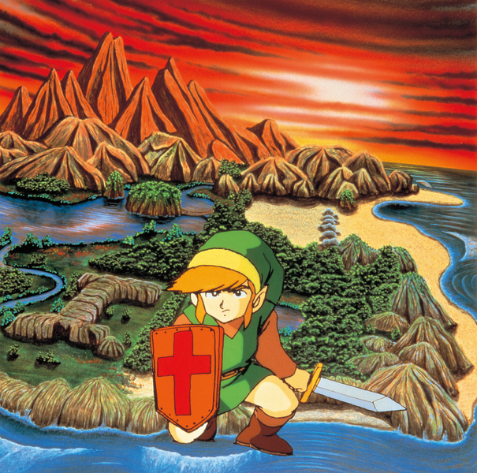
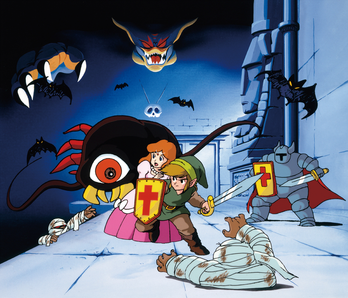
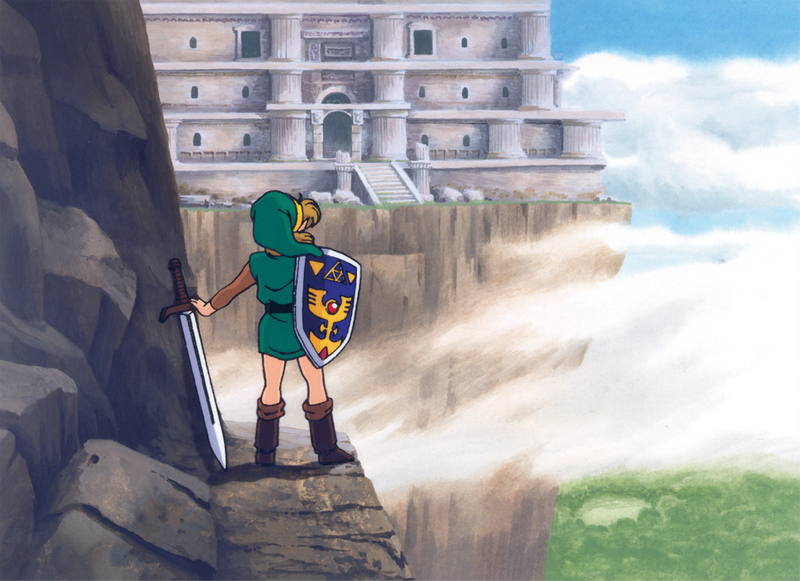
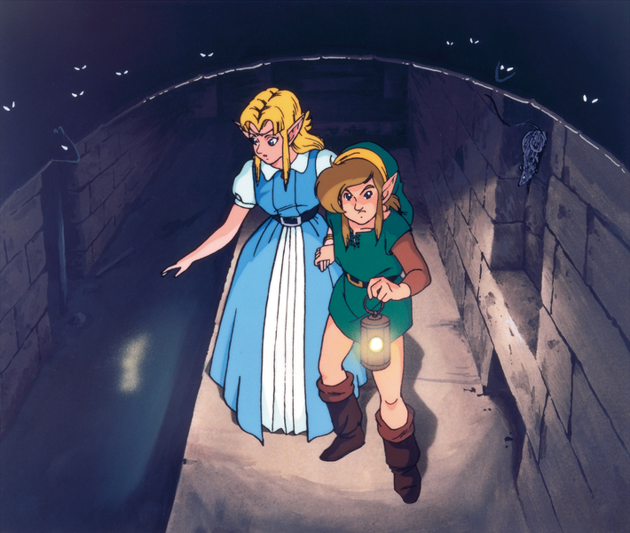
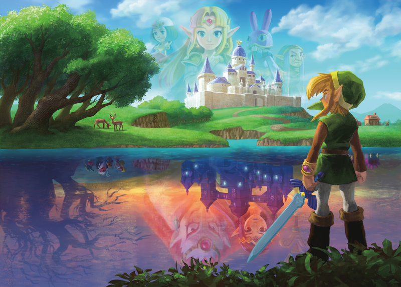
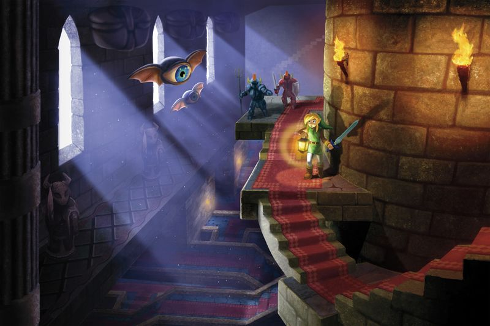
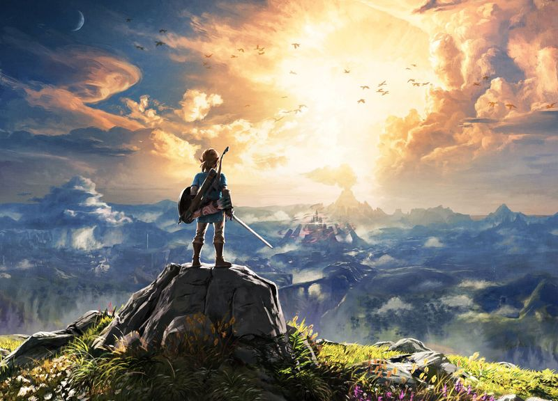
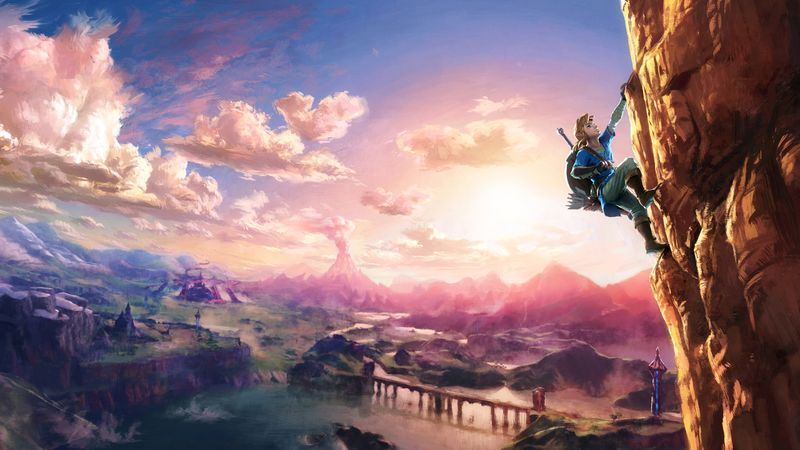
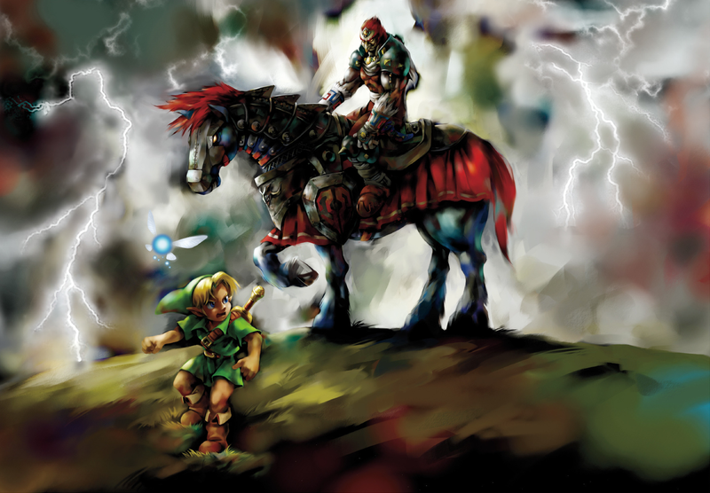
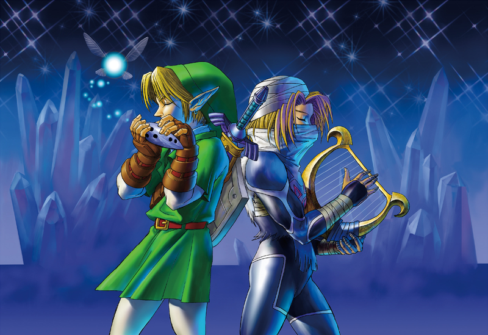

#1 The Legend of Zelda ®


"In the midst of this chaos, in a little kingdom in the land of Hyrule, a legend was being handed down from generation to generation, the legend of the 'Triforce'; golden triangles possessing mystical powers. One day, an evil army attacked this peaceful little kingdom and stole the Triforce of Power. This army was led by Ganon, the powerful Prince of Darkness who sought to plunge the World into fear and darkness under his rule. Fearing his wicked rule, Zelda, the princess of this kingdom, split up the Triforce of Wisdom into eight fragments and hid them throughout the realm to save the last remaining Triforce from the clutches of the evil Ganon. At the same time, she commanded her most trustworthy nursemaid, Impa, to secretly escape into the land and go find a man with enough courage to destroy the evil Ganon. Upon hearing this, Ganon grew angry, imprisoned the princess, and sent out a party in search of Impa."
"Braving forests and mountains, Impa fled for her life from her pursuers. As she reached the very limit of her energy she found herself surrounded by Ganon's evil henchmen. Cornered! What could she do? ... But wait! All was not lost. A young lad appeared. He skillfully drove off Ganon's henchmen, and saved Impa from a fate worse than death."
"His name was Link. During his travels, he had come across Impa and Ganon's henchmen. Impa told Link the whole story of Princess Zelda and the evil Ganon. Burning with a sense of justice, Link resolved to save Zelda, but Ganon was a powerful opponent. He held the Triforce of Power. And so, in order to fight off Ganon, Link had to bring the scattered eight fragments of the Triforce of Wisdom together to rebuild the mystical triangle. If he couldn't do this, there would be no chance Link could fight his way into Death Mountain where Ganon lived."
"Can Link really destroy Ganon and save Princess Zelda?
"Only your skill can answer that question. Good luck. Use the Triforce wisely."
#2 A Link to the Past ®


One day, a band of evil thieves managed to open the gateway to the Sacred Realm, where the mystical Triforce was hidden. Upon finding the sacred golden relic, the leader of the thieves, Ganondorf, slew his followers and claimed it as his own. Before long, dark power began to flow forth from the Sacred Realm. People were drawn into this darkness, and never heard from again. As a result, the King of Hyrule ordered the seven sages to seal the entrance to the Sacred Realm. A great battle ensued—monsters poured into the Light World from the sacred land and attacked the castle. The Knights of Hyrule defended the sages during the great battle against evil, and, though most of them perished in the struggle, the sages were able to cast their seal, stopping the flow of darkness and trapping the evil king Ganon within. This battle became known as the Imprisoning War.
Once the conflicts against Ganon had ceased, Hyrule entered a time of peace which lasted for centuries, until one year, when unexplained catastrophes began to occur. Pestilence and drought ravaged the land. Thinking the recent disasters plaguing Hyrule were somehow linked to the sages' seal, the king investigated it, but found it to be intact. Desperate for answers, he offered rewards for anyone who could find the source of Hyrule's troubles.
In response, a stranger named Agahnim appeared as if from nowhere and stayed the catastrophes with mighty magic. As a reward, the king gave him a new position as chief adviser to the throne, and the common folk proclaimed him their hero. Once more, peace appeared to have returned to Hyrule. Yet all was not well. Agahnim began to govern Hyrule in place of the king and abuse his political power as he saw fit. Rumors spread saying that Agahnim planned to remove the king and take the crown for himself, and that strange magical experiments were taking place in the castle tower at night. He cast spells on the soldiers and kidnapped the young maidens descended from the seven sages, using their powers in an attempt to break the seal placed on the Sacred Realm.
#3 A Link Between Worlds ®


After having a nightmare involving facing down a dark, shadowy figure, Link awakens to the sound of Gulley, the Blacksmith's son, calling for him. Having overslept again and shirked his responsibility to his master, Link follows Gulley to the Blacksmith's shop where he runs into the departing Captain. As the Captain thanks the Blacksmith for his new shield and departs, the Blacksmith's Wife quickly realizes that the absent-minded Captain has forgotten his sword and tasks Link with returning it to him. A guard at Hyrule Castle's front gate reveals to Link that the Captain intended on visiting the Sanctuary before returning to his duties.
As Link arrives at the Sanctuary, he walks in on a conversation between the Priest's daughter, Seres, and the gravedigger, Dampé. Seres offers to retrieve the Captain from inside as Dampé continues speaking to Link, before the doors to the Sanctuary slam shut and Seres screams in terror. Dampé informs Link of a secret passage into the Sanctuary beneath one of the graves and urges Link to use the Captain's sword to navigate the passage and rescue those inside. As Link arrives, he witnesses a strange sorcerer by the name of Yuga casting a spell on Seres to transform her into a painting. The Captain - having failed to defend the Priest and Seres - met with a similar fate on the Sanctuary's wall. As Link charges to confront Yuga, the sorcerer transforms into a painting himself, yet retains his mobility. Link loses consciousness after hitting the wall, and Yuga escapes with Seres' portrait in tow.
#4 Breath of the Wild ®


Link awakens from a deep slumber and a mysterious voice guides him to discover what has become of the ruined Kingdom of Hyrule Kingdom. Link leaves the Shrine of Resurrection, runs up to the ledge and looks out at the ruins of the kingdom Hyrule. Link then meets an Old Man, who will give him the Paraglider, which is the only way to get to Hyrule. The Old Man wants the Spirit Orbs, in the Shrines, respectively the Oman Au Shrine, Ja Baij Shrine, Owa Daim Shrine, and the Keh Namut Shrine. After Link gets the spirit orbs, the Old Man appears, then mysteriously disappears, telling Link to meet him in the Temple of Time. The Old Man reveals himself as the spirit of the deceased King of Hyrule, King Rhoam. Link learns from King Rhoam that 100 years prior, a great evil known as the Calamity Ganon rose up and laid waste to the kingdom and its people. Unable to be defeated, it was sealed within Hyrule Castle, while the ruins of the land were ravaged by nature over time. Although trapped, the Calamity Ganon has grown in power, and Link must defeat it before it breaks free once more and destroys the world. The mysterious voice turns out to be Zelda, whom who is the daughter of King Rhoam. After escaping the confines of the Great Plateau, Link is directed to meet the wise Sheikah elder Impa, and learn about the Guardians and Divine Beasts: 10,000 years prior these machines were created and successfully used by another Hero and another Princess to defeat the Calamity Ganon. But throughout the ages, knowledge about the ancient technology was lost until excavations in Hyrule Kingdom brought them to light once more, coinciding with the expected return of Calamity Ganon a hundred years ago. The Guardians were reactivated and four Champions were chosen to control the Divine Beasts: The Zora princess Princess Mipha, the Goron warrior Daruk, the Gerudo chief Urbosa, and the Rito archer Revali. All the while, Princess Zelda was unsuccessfully trying to gain access to her own prophesied powers, accompanied on her quests by her knight, the Hylian Champion Link. When the Calamity Ganon ultimately attacked, it devastated the Kingdom of Hyrule Kingdom by taking control of the ancient machines and turning them against the Hyruleans. As a last resort, Princess Zelda was able to place the gravely wounded Link in the Shrine of Resurrection and use her awoken sealing powers to trap herself with Calamity Ganon in Hyrule Castle.
As Link sets off on his quest to defeat Calamity Ganon, he is asked to investigate the fate of the Divine Beasts and their former Champions. His ultimate goal, however, remains to reach the Calamity Ganon and free the trapped Princess Zelda before the whole world is laid to waste. But with the entire Kingdom of Hyrule Kingdom before him to explore, it is up to Link himself to decide how he wishes to fulfill his foretold role as the Hylian Champion, and to save Hyrule Kingdom.
#5 Ocarina of Time ®


Approximately ten years before Ocarina of Time's story begins, there was a war known as the Hyrulean Civil War. This war explains the origins of several characters and provides extra backstory to their motives.
In the Kokiri Forest, all the forest children have their own guardian Fairies, bestowed upon them by the Great Deku Tree, except for one boy named Link. Link has recently been plagued by nightmares of a girl fleeing from an evil man clad in black. For as long as he can remember, Link has been ostracized by the other children and has never quite fit in. One day, as he is nearing death, the Great Deku Tree sends Navi the fairy to summon the boy to him. In order to test young Link's courage, the Great Deku Tree bids Link to venture inside his hollow and break the curse cast upon him by a "wicked man dressed in black."
Link complies, but his efforts are for naught; the Great Deku Tree's death was sealed in the pages of fate before Link's attempt had even begun. With his final breath, the Great Deku Tree bestows upon Link the Spiritual Stone of the Forest, the Kokiri's Emerald, and entreats him to travel to Hyrule Castle and meet with Princess Zelda.